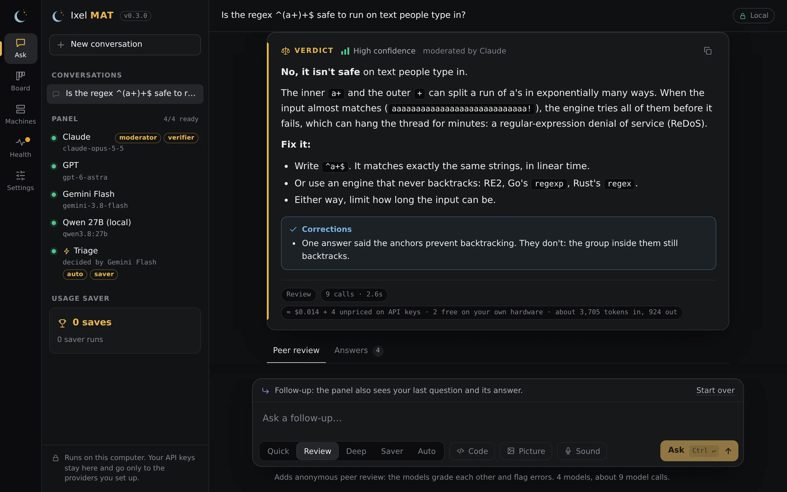

Put your AI models to work together
Ixel runs on your computer and uses the AI you already have: API keys, the Claude Code or Codex you're signed in to, and models running on your own machine. Your keys stay with you, and there's no Ixel account.
What you get
One install gives you three tools and an app that holds them:
- Ixel MAT, a panel of models. Ask a question and several models answer it, grade each other's answers without knowing whose they are, and one of them writes the verdict. You see who was wrong and why.
- Handoff, a task board your agents share. Claude Code, Codex, Gemini CLI, OpenCode and the rest hand work to each other with notes and reviews, instead of you copying and pasting between them.
- Machines, your SSH servers in one list, and the OpenClaw or Hermes agent on each, a click away.
- The Ixel app, one window with all of it: Ask, Board, Machines, Health and Settings.

Quickstart
About five minutes, most of it the download.
-
Install Ixel
Windows
In a normal PowerShell window (not "Run as administrator"):
irm https://ixelai.com/install.ps1 | iexmacOS
In Terminal:
curl -fsSL https://ixelai.com/install.sh | shLinux
In a terminal:
curl -fsSL https://ixelai.com/install.sh | shIf Git or Python is missing, the installer says how to get it, and on Windows and on a Mac with Homebrew it offers to install it for you. The install guide goes through each step.
-
Add your models
Open a new terminal window, so it finds the new commands, and run:
ixel setupIt finds the AI you already have (Claude Code, Codex, Gemini CLI, Ollama, LM Studio), and asks for any API keys you want to add. Three models or more is best: with two, a disagreement is a tie. More about setup.
-
Ask the panel
Open Ixel from the Start Menu, your Applications folder or your app menu (or run
ixel app), type a question, and press Ask. Or stay in the terminal: runixeland type your question there. -
Connect your agents (optional)
To let Claude Code, Codex and your other agents share work, go to a project's folder (a git repository) and run:
handoff setup --writeThen restart those apps. How Handoff works.
Find your way
ixel chat, reviewing your code, and every command.
Which model for each jobPicks from a benchmark that keeps up, for each part of a review.
Local modelsOllama, LM Studio, Private, and which open models fit your computer.
HandoffYour agents as a team: tasks, handoffs and reviews.
PrivacyWhat stays on your computer, and what goes to which company.
Get help
- Something not working? Run
ixel doctor(or open Health in the app). It checks each part of Ixel and gives the one line that fixes each problem.handoff doctordoes the same for Handoff. - Open these docs from Ixel:
ixel docsin a terminal, or Docs on the app's Settings page. - Found a bug, or a security problem? Email openixel.ai@gmail.com. For a security problem, please don't open a public issue.